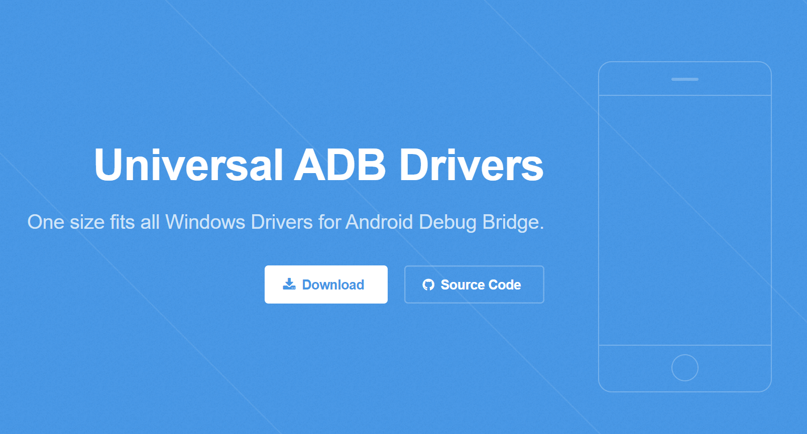
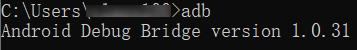
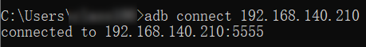
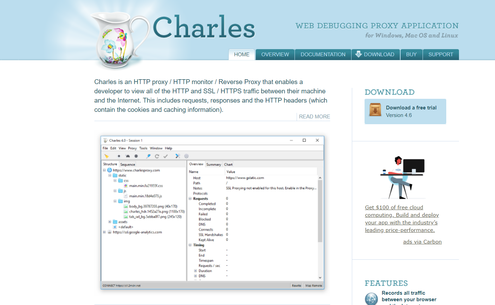
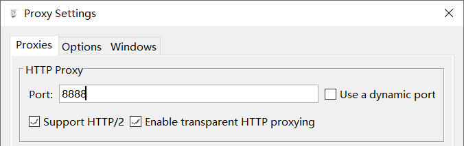
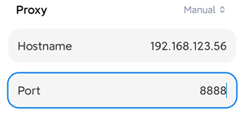
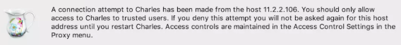
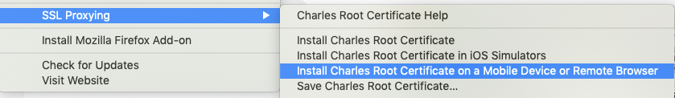
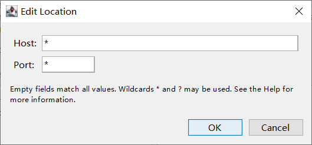
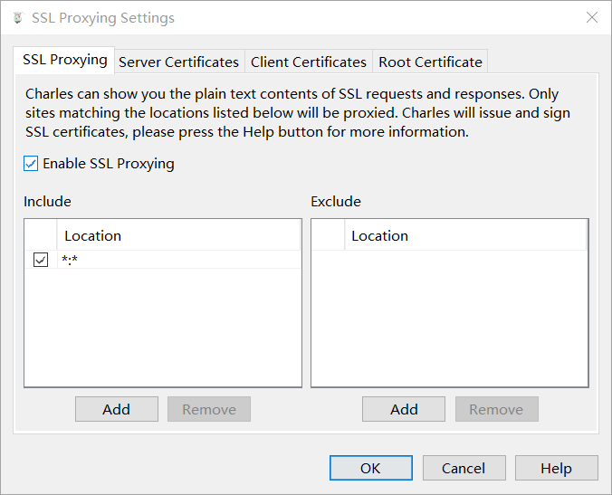

本书作者：测试开发刚哥，文章版权归个人所有，未经授权请勿转载。
在对安卓进行测试时，我们需要把 apk 传到安卓机上，对请求抓包，同时监控应用日志。本文就来讲讲具体操作。
安卓机是指基于安卓的机器 ，如手机、POS 机、电视盒子等。
传文件
我们拒绝用 U 盘传文件。直接用 WIFI 传。别问，问就是想装逼。哈哈哈。
① 先把装逼神器 adb 下载下来，打开以下网址：

下载后得到 UniversalAdbDriverSetup.msi 文件，只有 16.2 M，相比有些人让安装 Android Studio，轻巧了太多。
② 安装之后打开 cmd，输入 adb：

出现如图所示就算安装成功了。
③ 接着继续装逼，把安卓机掏出来，打开设置 | 系统 | 关于手机，对着“版本号”一顿猛戳，戳到开发者模式为止，启用它（不同安卓机可能方式不同）。
④ 装，接着装。在 WIFI 设置中，找到已经和电脑处于同一网络的 WIFI，查看高级选项，获取 IP 地址。
⑤ 在电脑的 cmd 中，输入以下命令使用 adb 连接安卓机：
adb connect 192.168.x.x
出现如图所示就算连接成功了：

⑥ 好，一切就绪，开始骚操作，电脑 → 手机：
adb push D:\test.apk /storage/emulated/0/
电脑 ← 手机：
adb pull /storage/emulated/0/test.apk D:\
抓包
抓包用到的工具是 Charles。下载地址：

下载后直接安装即可。建议找下破解，不然用着会有点卡。
抓包很简单，只需要两步。第一步在电脑端启动代理。第二步在安卓机上手动设置代理。
第一步在电脑端启动代理。Charles 中打开 Proxy | Proxy Settings 启用代理，默认端口 8888：

第二步在安卓机上手动设置代理。打开安卓机 WIFI 设置，编辑网络（不同手机可能方式不同），添加手动代理，填写电脑 IP 和 Charles 代理端口：

保存后 Charles 会提示有连接请求：

允许即可。
看日志
电脑端 cmd 一行命令搞定：
adb logcat
不过这样打出来的日志会比较多。可以做下过滤。
Windows：
adb logcat | find "some"
Linux：
adb locat | grep "some"
抓不到包的问题
有可能会抓不到包。不同机器原因各有不同。这里我不能给出完美的解决办法。只能分享下我的经验。如果无法解决，还是找下百度。
一种可能就是 HTTPS 证书问题，在 Help | SSL Proxying 有对应功能：

有些时候电脑端安装完证书就可以了，有些时候还需要在安卓机上下载证书：
http://charlesproxy.com/getssl
有一次我访问这个链接无响应，重启 Charles 又可以了下载了。
还有一种可能是没有添加白名单，Proxy | SSL Proxying setttings：


简要回顾
本文介绍了安卓机测试环境的准备，用到了 adb、Charles 软件，进行传文件、抓包、看日志。操作还是比较简单，不过实际过程中，可能会由于机器不同导致遇到奇奇怪怪的问题。通过百度，一般是能够解决的。最后温馨提示，如果第二天安卓机提示无法连接网络，那么看看是不是电脑的 Charles 关掉了。